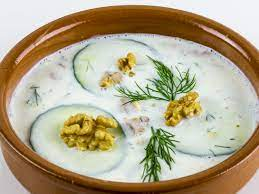

Tarator

Description
This is a famous Bulgarian cold soup but I only have a vague idea of how it's made
Ingredients
- Yogurt
- Cucumber
- Some spices, dill or something like that
- Some kind of vegetable oil
- Salt
- I think some walnuts?
- Water??
Steps
- Mix some yogurt and water
- Slice cucumber into tiny cubes
- Add cucumbers to yogurt-water mix
- At some point throw in some spices
- Add some walnuts too
- Add salt
- And add some oil, I guess
- Transfer to the fridge
- Wait for about an hour
- And that's about it, I think